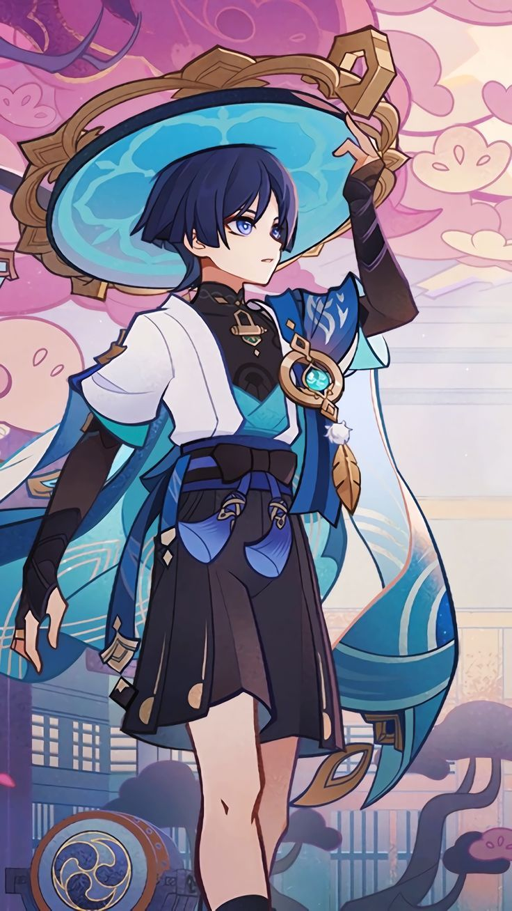

My hobbies

Bermain Genshin Impact adalah hiburan yang seru bagiku. Kalau kamu juga main, ayo co-op bareng—eksplor dunia Teyvat bareng pasti lebih asyik! Btw, karakter kesayanganku adalah Wanderer (alias Wawan)! Dia keren dan tamvan!😆✨

Aku suka banget nonton anime, dan salah satu anime yang menurutku biasa keren adalah 86! Ceritanya dalam, penuh emosi, dan punya aksi yang bikin deg-degan. Hubungan Shin dan Lena juga bikin baper🥺 86 wajib ditonton! 🎥✨

Membaca manhwa adalah salah satu hobiku yang paling asyik! Salah satu favoritku adalah Solo Leveling, kisah Sung Jin-Woo, si hunter terlemah yang berkembang menjadi yang terkuat. Sekarang manhwa ini sudah diadaptasi menjadi anime!